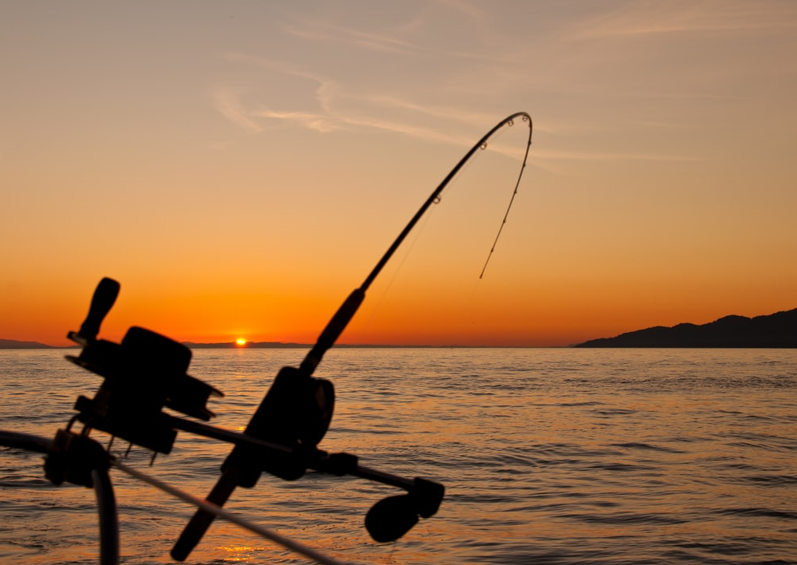
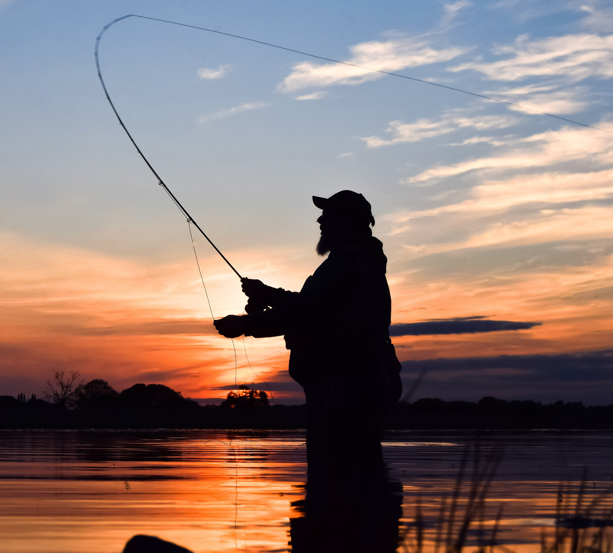

Many men go fishing all of their lives without knowing that it is not fish they are after. – Henry David Thoreau
Article: Fishing in Finland
Grayling, a member of the salmon family, grows to an impressive size in north-western Lapland, the “arm of Finland”. The
cold and deep lakes of northern Finland are also home to the delicious Arctic char, which is a sought-after food fish
and is also caught by ice fishers.


Take your time to plan on what you want to do
Fly Fishing
In a nutshell, fly fishing involves walking into waist-deep water (or just standing beside it), casting a line tied with
a small fly (a replica insect) ahead of you, then mimicking the movements of said insect/fly for hours at a time. The
aim of the game? To trick a hungry fish into biting. A master fly fisher in action is something
to behold.